It annotates a plot of cell divisions with information from sampling times and MRCAs for all available samples
Usage
annotate_forest(
tree_plot,
forest,
samples = TRUE,
MRCAs = TRUE,
exposures = FALSE,
facet_signatures = TRUE,
drivers = TRUE,
add_driver_label = TRUE
)Arguments
- tree_plot
The output of
plot_forest.- forest
The original forest object from which the input to
plot_foresthas been derived.- samples
If
TRUEit annotates samples.- MRCAs
If
TRUEit annotates MRCAs.- exposures
If
TRUEit annotates exposures to mutational signatures.- facet_signatures
If
TRUEand ifexposuresisTRUEit creates a faceted forest plot where the exposure to each signature is annotated on a separated plot.- drivers
If
TRUEit annotates drivers on the node they originated.- add_driver_label
If
TRUEand ifdriversisTRUEit annotates the driver name.
Examples
sim <- SpatialSimulation()
sim$add_mutant(name = "A", growth_rates = 0.08, death_rates = 0.01)
sim$place_cell("A", 500, 500)
sim$run_up_to_time(60)
#>
[████████████████████████████████████████] 100% [00m:00s] Saving snapshot
sim$sample_cells("MySample", c(500, 500), c(510, 510))
m_engine = MutationEngine(setup_code = "demo")
#>
[█---------------------------------------] 0% [00m:00s] Loading context index
[████████████████████████████████████████] 100% [00m:00s] Context index loaded
#>
[█---------------------------------------] 0% [00m:00s] Loading RS index
[██████████------------------------------] 23% [00m:01s] Loading RS index
[██████████████████----------------------] 44% [00m:02s] Loading RS index
[███████████████████████████-------------] 65% [00m:03s] Loading RS index
[███████████████████████████████████-----] 87% [00m:04s] Loading RS index
[████████████████████████████████████████] 100% [00m:04s] RS index loaded
#>
[█---------------------------------------] 0% [00m:00s] Loading germline
[████████████████████████████████████████] 100% [00m:00s] Germline loaded
m_engine$add_mutant(mutant_name = "A",
passenger_rates = c(SNV = 1e-9),
drivers = list(SNV("22", 10510210, "C"),
CNA(type = "A", "22", chr_pos = 10303470,
len = 200000)))
#>
[█---------------------------------------] 0% [00m:00s] Retrieving "A" SNVs
[█---------------------------------------] 0% [00m:00s] Found 22
[█---------------------------------------] 0% [00m:00s] Reading 22
[█---------------------------------------] 0% [00m:01s] Reading 22
[█---------------------------------------] 0% [00m:02s] Reading 22
[████████████████████████████████████████] 100% [00m:03s] "A" SNVs retrieved
m_engine$add_exposure(coefficients = c(SBS13 = 0.2, SBS1 = 0.8))
m_engine$add_exposure(time=50, coefficients = c(SBS17b = 0.2, SBS3 = 0.8))
forest = sim$get_samples_forest()
forest$get_samples_info()
#> name id xmin ymin xmax ymax tumour_cells tumour_cells_in_bbox time
#> 1 MySample 16 500 500 510 510 14 14 60.15479
forest_muts = m_engine$place_mutations(forest, 1000, 500)
#>
[█---------------------------------------] 0% [00m:00s] Placing mutations
[████████████████████████████████████████] 100% [00m:00s] Mutations placed
tree_plot = plot_forest(forest)
annotate_forest(tree_plot, forest_muts, samples = T, MRCAs = T,
exposures = T, drivers=T, add_driver_label = T)
